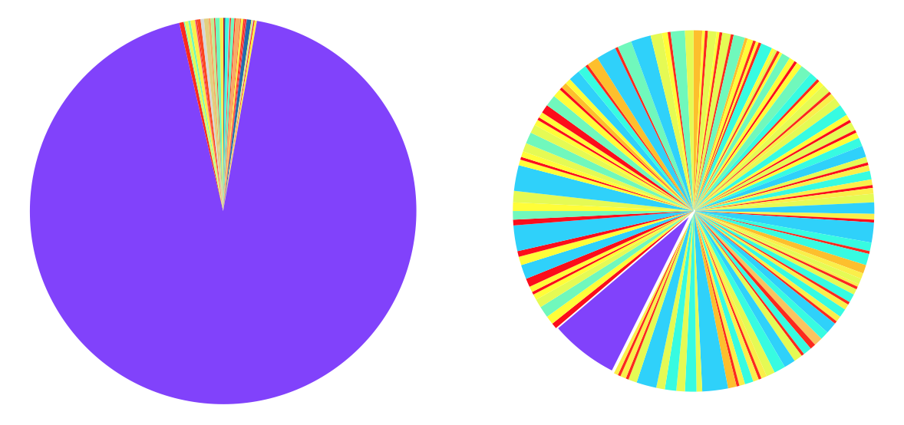
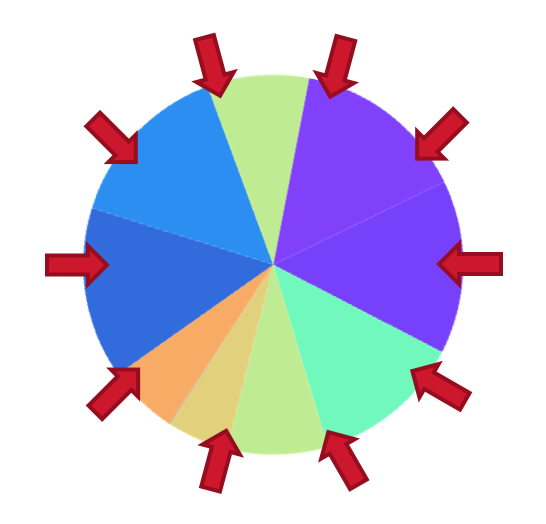

Selection¶
The selection process aims to mimic natural selection where individuals that are unfit do not survive. In the selection stage, the fittest individuals selected to survive and enter into the gene pool where they will have the opportunity to reproduce. Selection schemes can be classified as a proportional selection where selection is proportional to the fitness score or ordinal selection if it depends on the rank of the fitness score
When designing the selection mechanism selection pressure needs to be taken into account. The selection pressure describes the degree of bias towards fitter chromosomes. A high selection pressure highly favours the individuals with the best fitness score. While this may greatly improve the overall fitness of the following generation, the population is at risk of becoming homogenous and result in a poor exploration of the solution space. If however the selection pressure is too low, evolution can be quite slow.
Tournament selection¶
In tournament selection, n tournaments are hosted, and the winner of each tournament goes into the gene pool. For each tournament, 2 participants are chosen from the population and the individual with the better fitness score will win with probability win_rate otherwise the indiviual with the lower fitness score will win. You can change the selection pressure by adjusting win_rate. Tournament selection is a type of ordinal selection method as it is based on the rank of an individual's fitness score.
tournament(ind_1, ind_2, win_rate, gene_pool):
if individual_1.fitness_score > individual_2.fitness_score:
rank_1 = individual_1
rank_2 = individual_2
else:
rank_1 = individual_2
rank_2 = individual_1
r <- randomly generated number
if r < win_rate:
gene_pool <- rank_1
else:
gene_pool <- rank_2
Selection pressure¶
sim = ga.ga(genes,
evaluate,
clone = 0,
epoch = 250,
population_size = 40,
sigma = 0.5,
winrate = winrate)
sim.run_simulation(seed = 0)

|

|
Selection pressure is too high |
Good selection pressure |
|
|

|

|
No selection pressure |
Negative selection pressure |
|
|
Selection pressure is too high
Only a very small selection of the fittest individuals are allowed to reproduce so there is less variation in each successive generation. Eventually the population may become homogenous (each individual has the same gene set) and exploration of the search space relies entirely on mutation so exploration can be slow.
Good selection pressure
A good selection pressure allows the population to explore the search space but preferences fitter individuals so that the population moves towards the global optimum.
No selection pressure
When there is no selection pressure each individual is equally likely to reproduce. As a result, the population is equally inclined to explore areas of low fitness and high fitness. Exploration is then random.
Negative selection pressure
If winrate < 0.5 the individuals with lower fitness are more likely to reproduce. This results in the population moving away from the optimum.
Warning
The value of the winrate which corresponds to a good selection pressure will depend on the other hyperparametrs of your genetic algorithm.
Roulette wheel selection¶
In roulette wheel selection, a roulette wheel is constructed where each slice represents an individual of the population and the area is proportional to its fitness score.
For a maximisation problem:
For minimisation problems, the fitness score first needs to be inverted. One way to invert the fitness score is to subtract the fitness score from the maximum fitness score of the generation and adding 1 [Cox05].
Traditionally, the roulette wheel is spun N times with a single marker, and whichever individual the marker lands on enters into the gene pool. An issue with roulette wheel selection is that the wheel may be dominated by a few individuals with comparatively excellent fitness scores and so the next generation will inherit genes primarily from those extremely fit individuals. Over time, variation in the population will decrease and the population will become homogenous. Conversely, if you have a large population the gene pool may be diluted with bad genes, so the roulette wheel may be dominated by the bad/mediocre individuals. It is then possible that none of the fit individuals are chosen for selection, in which case you will loose good genes.
{kind=link}
Stochastic universal sampling [Bak87] was proposed to address these problems. Instead of spinning the wheel N times, N markers are placed uniformly around the wheel and the wheel is spun once. Each marker then selected one individual to enter into the mating pool.
{kind=link}
sim = ga.ga(genes,
evaluate,
clone = 0,
epoch = 250,
population_size = 40,
sigma = 0.5,
selection = 'roulette_wheel')
sim.run_simulation(seed = 0)

This example uses the same hyperparameters as those above, but uses selection = 'roulette_wheel. The population primarily explores the trough where the fitness score is better. Note that you cannot alter the selection pressure.
- Bak87
James E. Baker. Reducing bias and inefficiency in the selection algorithm. In Proceedings of the Second International Conference on Genetic Algorithms on Genetic Algorithms and Their Application, 14–21. Hillsdale, NJ, USA, 1987. L. Erlbaum Associates Inc. URL: http://dl.acm.org/citation.cfm?id=42512.42515.
- Cox05
E. Cox. Fuzzy Modeling and Genetic Algorithms for Data Mining and Exploration. Morgan Kaufmann series in data management systems. Elsevier/Morgan Kaufmann, 2005. ISBN 9780121942755. URL: https://books.google.com.au/books?id=H93cJpnbwpcC.